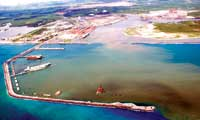

Um canteiro de obras que não para de crescer
Para abrigar mais de 130 empresas, entre elas uma grande
refinaria de petróleo e o maior estaleiro da América Latina, o
porto de SUAPE recebe investimentos em expansão e na
construção de novos acessos
Mais de uma década após as primeiras iniciativas para a implantação de um Complexo Industrial no porto de SUAPE, em Pernambuco, a região finalmente se consolida como um dos principais destinos dos investimentos no Norte e Nordeste do País.
Atraídos por um porto de localização privilegiada, que possibilita acesso aos mercados da Europa e América do Norte, os investimentos chegam à região impulsionados pela expansão do setor de petróleo e pela retomada da indústria brasileira de construção naval.
Referência
http://www.revistamt.com.br/index.php?option=com_conteudo&task=viewMateria&id=327